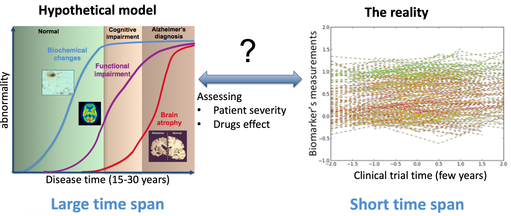
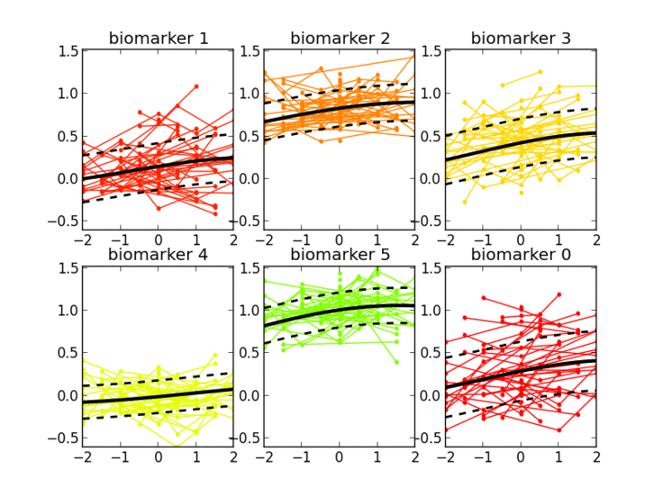
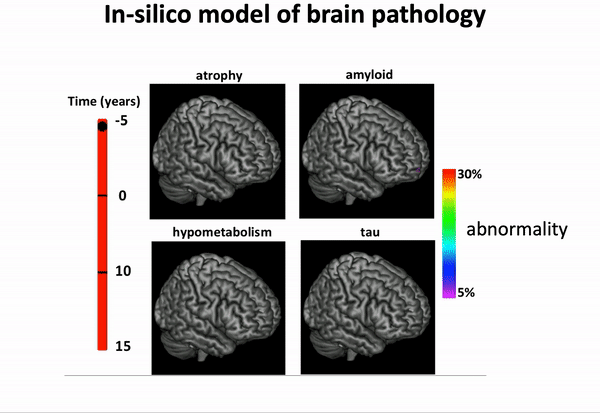
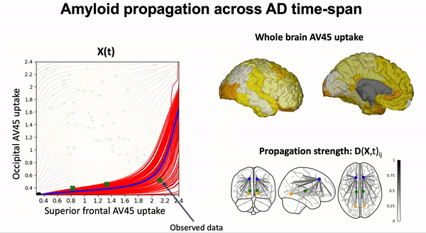

Gaussian Process Progression Model¶
The problem¶
Longitudinal dataset of measurements from neurodegenerative studies generally lack of a well-defined temporal reference, since the onset of the pathology may vary across individuals according to genetic, demographic and environmental factors. Therefore, age or visit date information are biased time references for the individual longitudinal measurements. There is a critical need to define the AD evolution in a data-driven manner with respect to an absolute time scale associated to the natural history of the pathology.
The solution: GPPM ;)¶
The Gaussian Process Progression Model (GPPM) is based on the probabilistic estimation of biomarkers’ trajectories and on the quantification of the uncertainty of the predicted individual pathological stage. The inference framework accounts for a time reparameterization function, encoding individual differences in disease timing and speed relative to the fixed effect.
Thanks to the probabilistic nature of GPPM, the resulting long-term disease progression model can be used as a statistical reference representing the transition from normal to pathological stages, thus allowing probabilistic diagnosis in the clinical scenario. The model can be further used to quantify the diagnostic uncertainty of individual disease severity, with respect to missing measurements, biomarkers, and follow-up information.
GPPM has three key components underlying its methodology: 1) it defines a non-parametric, Gaussian process, Bayesian regression model for individual trajectories, 2) introduces a monotonicity information to impose some regular behaviour on the trajectories, and 3) models individual time transformations encoding the information on the latent pathological stage.
A variety of applications¶
The model was originally published in NeuroImage 2017, and demonstrated on a large cohort of amyloid positive Alzheimer’s disease individuals.

GPPM has been extended in recent years, and is now capable of disentangling spatio-temporal disease trajectories from collections of high-dimensional brain images…
… and imposing a variety of biology-inspired constraints on the biomarker trajectories.
Some scientific literature on the GPPM methods¶
The theory of (deep) GP regression under constraints on the derivatives:
Modeling biomarkers’ trajectories in Alzheimer’s disease:
Modeling the dynamics of amyloid propagation across brain networks:
S. Garbarino and M. Lorenzi, In IPMI 2019: Information Processing in Medical Imaging pp 57-69,
Spatio-temporal analysis of multimodal changes from time series of brain images:
C. Abi Nader, N. Ayache, P. Robert and M. Lorenzi. NeuroImage 2020